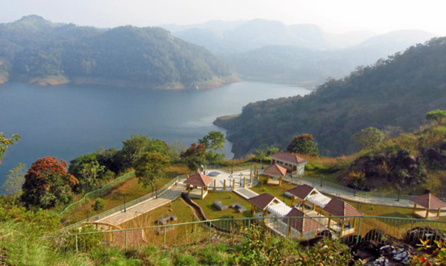

1.Idukki wildlife sanctuary
1.Idukki wildlife sanctuary
Away from the hustle and bustle of the cities, the Idukki Wildlife is located in the Thodupuzha and Udumpanchola taluks of Idukki at an altitude of 450 – 750 ft above the sea level.
The sanctuary, flanked on 3 sides by the tranquil waters of Idukki Lake, is housed amidst picturesque settings of tropical evergreen & semi-evergreen forests, meadows, and deciduous trees.The Wildlife Sanctuary, one of the places to visit in Idukki, houses hordes of wild elephants.
The other species from the animal kingdom include bison, sambar, deer, wild dogs, jungle cats, Malabar Giant Squirrel, wild boars, and tigers. Reptilians such as Cobra, viper, krait, etc will bewilder the visitor, while avian species Malabar grey hornbill, Purple Sunbird, Golden Oriole, and Black bulbul enchant him.
LOCATION: Painavu P.O. Idukki–685603. 40 km from Thodupuzha, Idukki.
TIMIMGS: All day.
ENTRY FEES: None
 2.Idukki Arch Dam
2.Idukki Arch Dam
The Idukki dam is constructed across the Periyar River, in a valley between the Kuravan and Kurathi hills in Kerala. The awe-inspiring, majestic dam, which stands at 167.68 meters (550 ft), is one of the highest arch dams in Asia. The dam, which is one of the Idukki tourist places, constructed by the Kerala government in 1975 and supports 780 MW hydroelectric power station that draws electricity from this dam.
The sheer magnitude of the structure along with the mountains, verdant vegetation, and 60 sq. km placid lake, which is created by the 3 dams, Idukki dam, Cheruthoni and Kulamavu, captivate the visitors.
LOCATION: 33 km from Idukki Dist.
TIMIMGS: Public Holidays, Saturdays and Sundays.
ENTRY FEES: Rs 25 for adults and Rs 5 for children. The tariff for a 15-minute boat ride for 5 persons is Rs. 600.

3.Hill View Park
Hill View Park, one of the Idukki tourist places, located at a distance of 2 km from Idukki Bus stand, is a magnificent and well-managed park. The park, stretching over 8 acres enthralls the visitors with hundreds of varieties of crotons, flowers, medicinal plants, and other woods.
The Hill View Park houses a natural water body, where visitors can enjoy boat rides. The view from the watchtower of both the dams, Idukki and Cheruthoni, the surrounding hills on all four sides and the lush greenery takes the breath away.
The Park remains open throughout the year and can be accessed through gentle slopes, though it is stationed at 350 ft above the level of Dam water. The herbal garden and children’s play area add appeal to the Hill View Park.
LOCATION: 2 km from Idukki.
ENTRY FEES: Rs. 10 for adults and Rs. 5 for Children.
 4.keezharkuth waterfalls
4.keezharkuth waterfalls
The cascading waters from a height of 1500 meters amidst the hills enveloped in lush greenery, adorns the skies with rainbows that takes the visitors’ breath away. A favorable hunting ground for photographers, the Keezharkuthu falls also referred to as rainbow falls immerse the visitors in an inexplicable experience.
The contiguous forests are believed to be endowed with medicinal plants and herbs, which are used by tribal inhabitants from centuries. It is also home for rich fauna.The rocky terrain of the Keezharkuthu, one of the Idukki tourist places, is renowned for its exploration activities such as rock climbing, mountaineering, camping, and trekking.
LOCATION: 30 km from Idukki.
TIMINGS:All day.
ENTRY FEES: None.